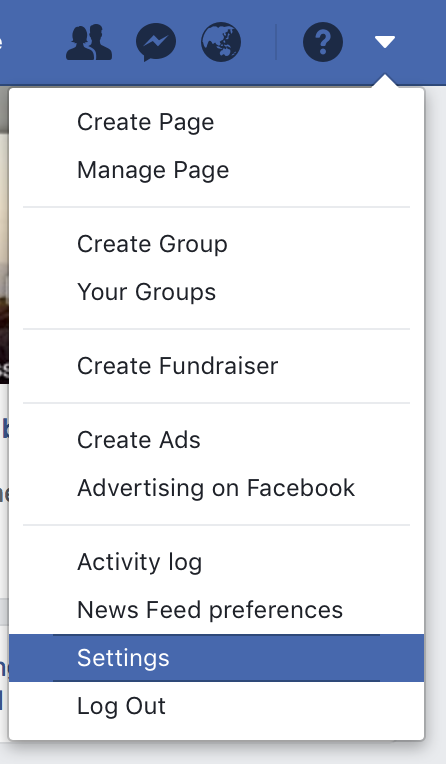
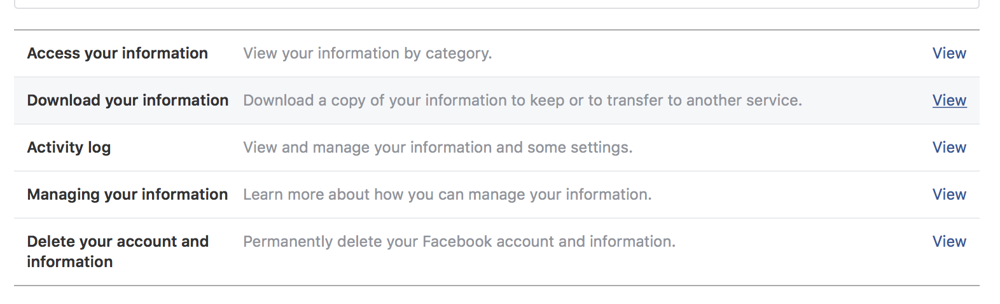
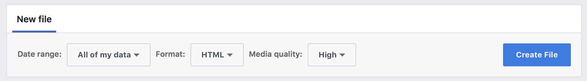
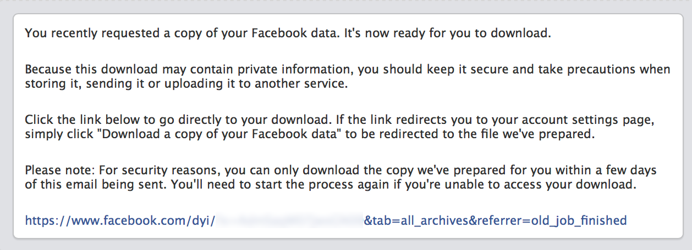
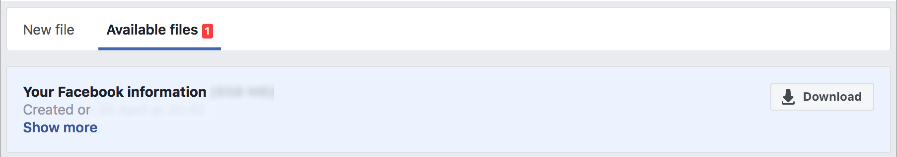

Ways Facebook can use your data to determine and track your location
The stuff you know about
- Check-ins
- Address
- About Me
- Work and education
- Places you've lived
- Current city
- Hometown
- Education
The stuff you might not know about
What categories of my Facebook data are available to me?
- Activity Log
- Spoken Languages
- Active Sessions
- IP addresses
- The time zones you usually post in
- Login/logouts - IP address
- Apps - Apps primarily used in your location
- Currency - your preferred currency on FB
- Events - events you've joined or been invited to
- Last Location
- Messenger login
- Locale - the language you've selected to use Facebook in
- Networks - Affiliations with schools or workplaces that you belong to on Facebook
- Photo metadata - Any metadata that is transmitted with your uploaded photos. Location info from EXIF data
- Phone numbers - including verified mobile numbers you' ve added for security
- Reverse image search
Data from other Facebook products
- Messenger
- WhatsApp - End to end encrypted messages but the metadata can be collected.
All that stuff above TIMES ALL your FRIENDS AND PEOPLE YOU'VE APPEARED IN PHOTOS WITH!!!!
The stuff we haven't thought of yet??
Step 1.
Log in to facebook on a trusted computer
(This unfortunately doesn't work on mobile)
Step 2.
Click on the ▼ in the top right, then on settings

Step 4.
Click on "Download Your Information".
(Unfortunately Facebook thinks it's being sneaky and we can't give you a direct link to this step)

Step 5.
Leave everything selected & Click on "Create File"

Step 6.
After about an hour depending on how much information facebook has about you, Facebook will email you to let you know the file is ready to download

Step 7.
Click the Download button next to your most recent data export.

Want to see what facebook knows about you?
First, don't trust us: turn off your WI-FI before proceeding
Further resources to learn more
What categories of my Facebook are available to me
https://www.facebook.com/help/405183566203254
What is metadata?
Wikipedia entry on metadata
What is an IP address?
Wikipedia entry on IP addresses
How to determine physical location from IP address
What is EXIF data?
Exif Wikipedia entry
How to determine physical location from photo metadata
How to see exactly where a photo was taken and keep your location private